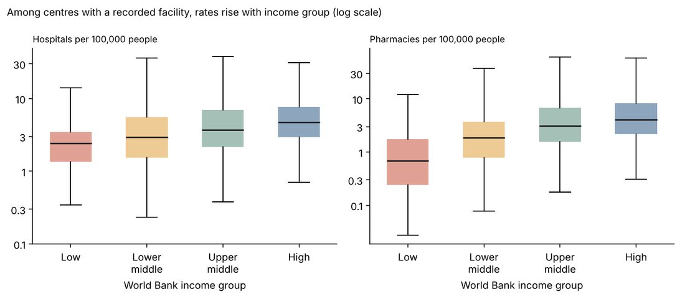
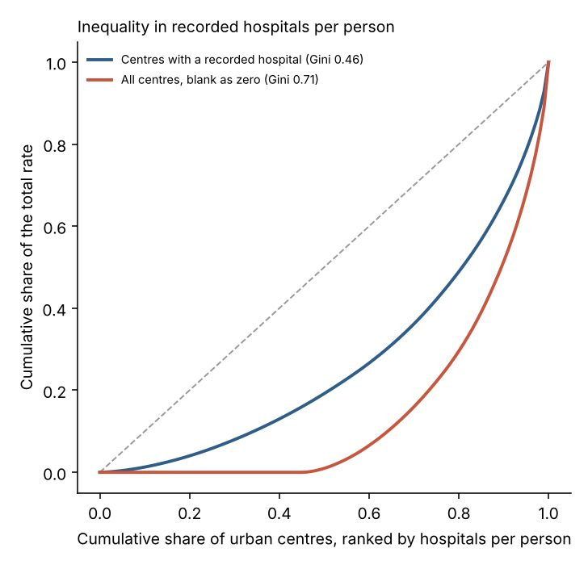
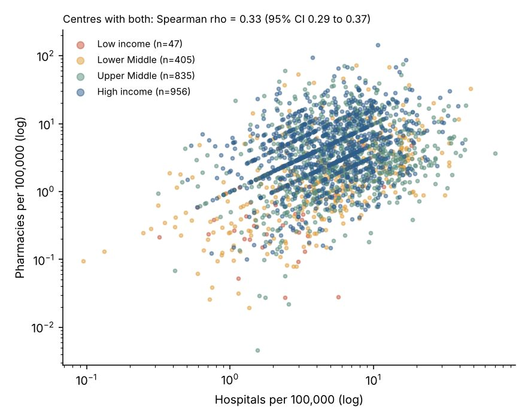

Urban Health Access
Hospitals and pharmacies across 11,000 urban centres. SQL preparation, nonparametric tests with effect sizes, logistic regression with bootstrap intervals and an interactive dashboard.
Who has recorded hospitals and pharmacies?
Which urban centres have recorded hospitals and pharmacies, how many per person, and how unevenly are they spread across income groups?
- A blank means no facility was recorded, not that none exists. Recording is far more complete in richer countries.
- Among centres with a recorded hospital, rates rise with income: median 2.4 to 4.8 per 100,000.
- Pharmacies show a steeper gradient than hospitals.
- Dublin has 9.3 recorded hospitals and 15.5 pharmacies per 100,000.
Look up any city
The full interactive dashboard lets you compare income groups and look up every urban centre in the dataset. It runs as a single self-contained page.
Open the dashboard →BI version →Query it in SQL →
Methods: SQL with window functions, Kruskal-Wallis with epsilon squared, Mann-Whitney with Holm correction and Cliff's delta, logistic regression with bootstrap intervals, Gini and Lorenz curves, ICC.
From the analysis
Select a figure to enlarge it.



